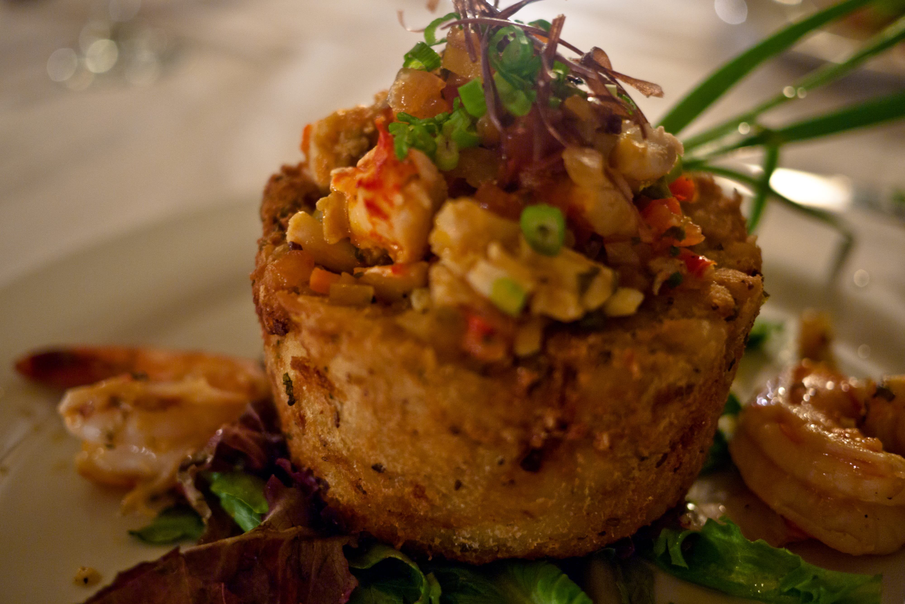
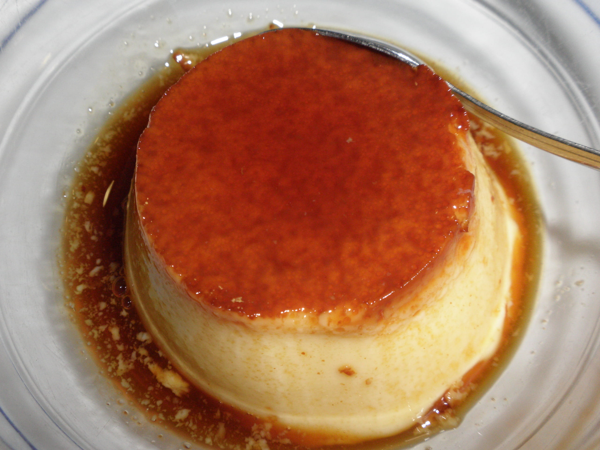

Culture & Flavor
The sounds and tastes that define the island.
Taste of the Island
Puerto Rican cuisine is a vibrant mix of Taíno, Spanish, and African influences. Explore the dishes that are the heart of the culture.

Mofongo
The iconic dish of mashed fried plantains, garlic, and (often) chicharrones. A true staple.

Lechón Asado
Slow-roasted pork, a celebrated dish especially for holidays. Known for its crispy skin and tender meat.

Alcapurrias
Popular street food. Fritters made from a masa of green bananas and yautía, stuffed with seasoned meat.

Flan de Queso
A rich, creamy dessert. This popular version is a cream cheese flan, covered in a sweet caramel sauce.
Sounds of Puerto Rico
From the rhythms of Bomba and Plena to the global sensation of Salsa and Reggaetón, music is the lifeblood of Puerto Rico